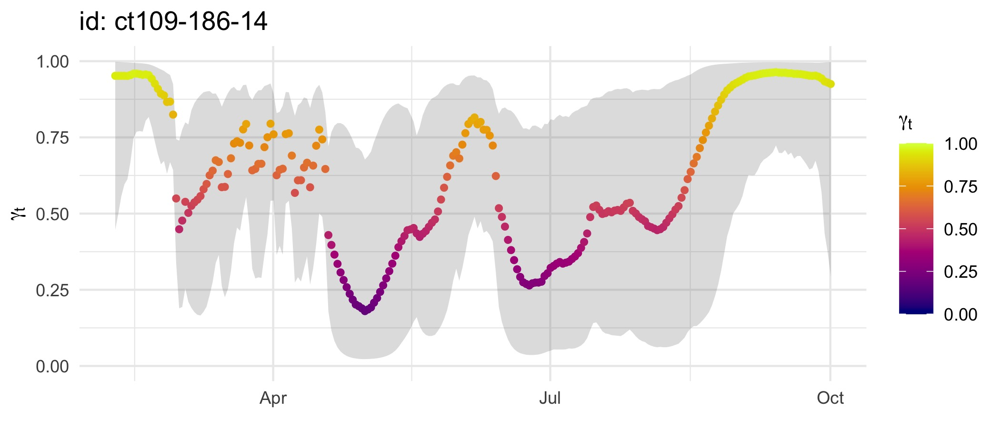
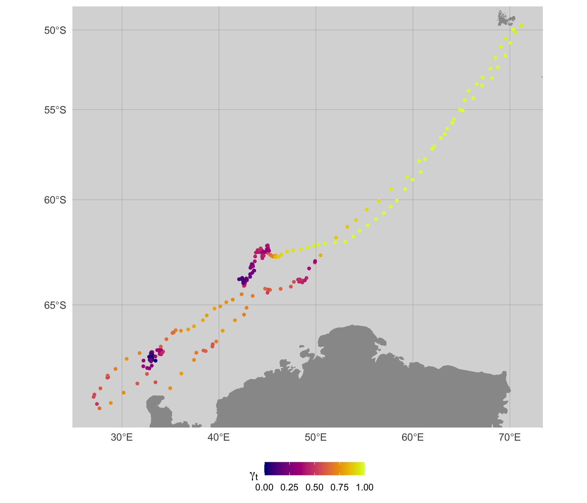
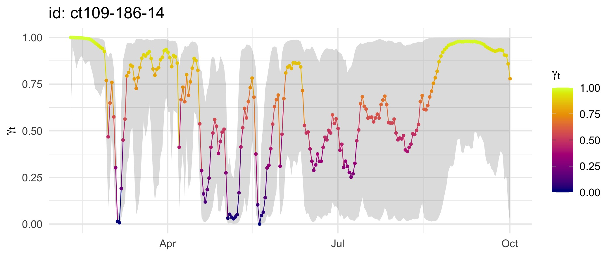
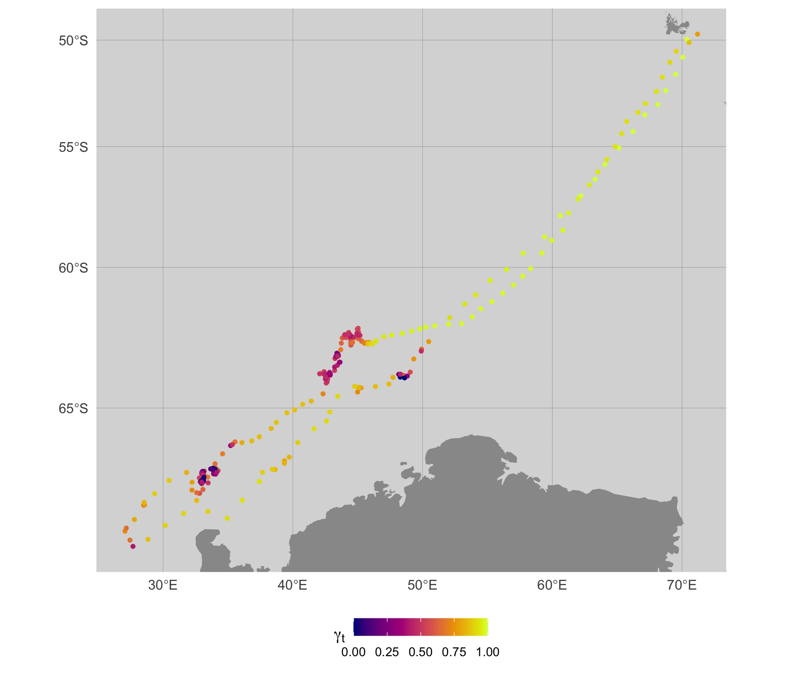

aniMotum provides a few different ways to fit a move
persistence model to obtain estimates of a continuous-valued behavioural
index along individual tracks (Auger-Méthé et al. 2017; Jonsen et
al. 2019). In aniMotum versions prior to 1.0-5, move
persistence was estimated via fit_mpm() and, when fitting
to Argos or other location error-prone data types, required a two-stage
approach of first calling fit_ssm() and then calling
fit_mpm(). The first step fits a state-space model to
account for location error in the data:
d <- subset(sese, id == "ct109-186-14")
fit <- fit_ssm(d,
vmax = 3,
model = "crw",
time.step = 24,
control = ssm_control(verbose = 0))The second step estimates move persistence from the SSM-estimated locations:
fmp <- fit_mpm(fit,
what = "predicted",
model = "mpm",
control = mpm_control(verbose = 0))Using this approach, location uncertainty is not carried through to the estimation of move persistence. This can potentially result in estimates of move persistence that are biased.
plot(fmp, ask = FALSE)
map(fit, fmp, what = "predicted", silent = TRUE)
aniMotum now provides a move persistence model in
state-space form to allow simultaneous estimation of move persistence
and location states, and this is invoked via fit_ssm() by
specifying model = "mp". Currently, this model can only be
fit to individuals separately.
Here, we fit the move persistence SSM to the same southern elephant seal track as above:
fit <- fit_ssm(d,
vmax = 3,
model = "mp",
time.step = 24,
control = ssm_control(verbose = 0))Move persistence estimates can be plotted as a time-series. Note the broadly similar time-series of move persistence estimates as above, but here considerably more variability is apparent because we have not smoothed away that variability by fitting to SSM-smoothed location estimates as in the above example.
plot(fit, what = "predicted", type = 3, normalise = TRUE)
Here, plot() extracts move persistence estimates as
either fitted (corresponding to observation times) or predicted
(corresponding to regular time intervals) values using
grab() internally. The normalise argument
rescales the estimates to span the interval 0,1. Move persistence
estimates from fit_ssm() tend to be smoothed more extremely
compared those obtained from fit_mpm() and can lack
contrast. Normalising the estimates provides a clearer view of changes
in movement behaviour along tracks, highlighting regions where animals
spend disproportionately more or less time. When fitting to a collection
of individuals, the normalisation can be applied separately to each
individual or collectively via
normalise = TRUE, group = TRUE. In the latter case, the
relative magnitudes of move persistence are preserved across
individuals.
When mapping these move persistence estimates along the 2-D track, we
can see that segments of low (dark blue) and high (bright yellow) move
persistence correspond to areas where the seal spends disproportionately
more or less time, respectively. The pattern is overall quite similar to
the map using fit_mpm estimates, but there are subtle
differences apparent.
map(fit, what = "p", normalise = TRUE, silent = TRUE)